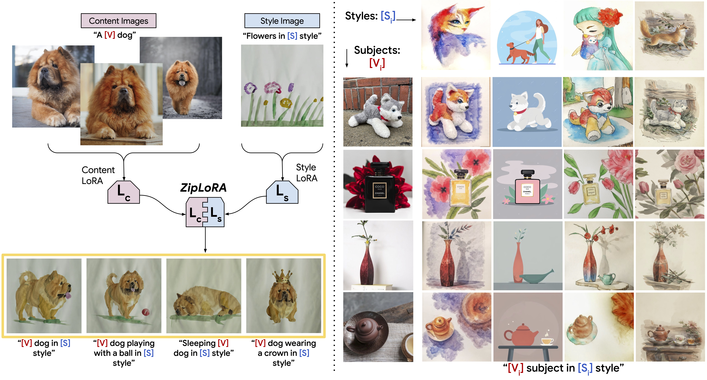
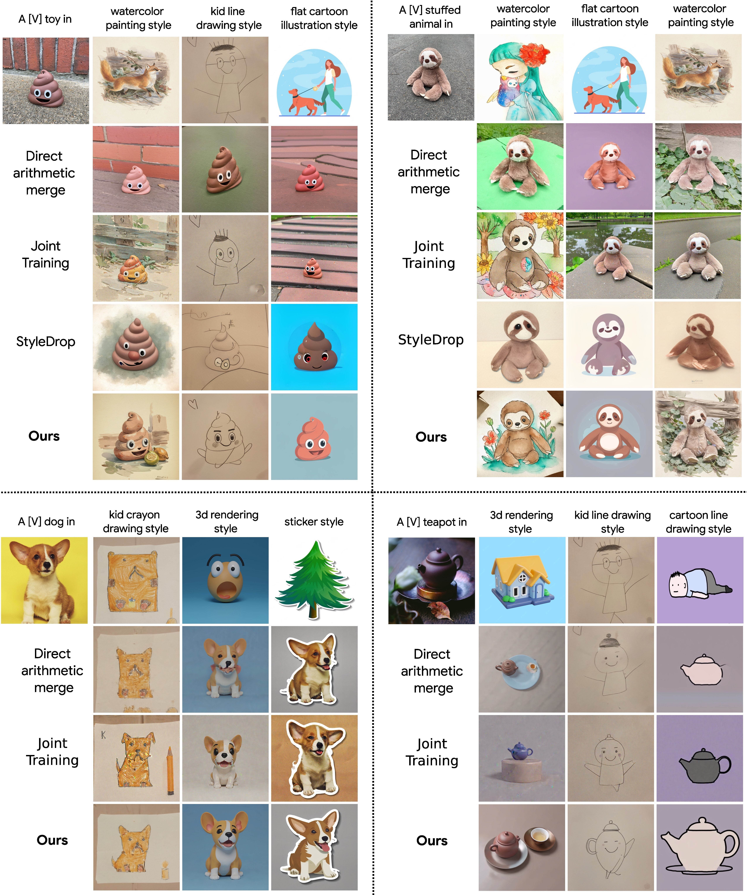
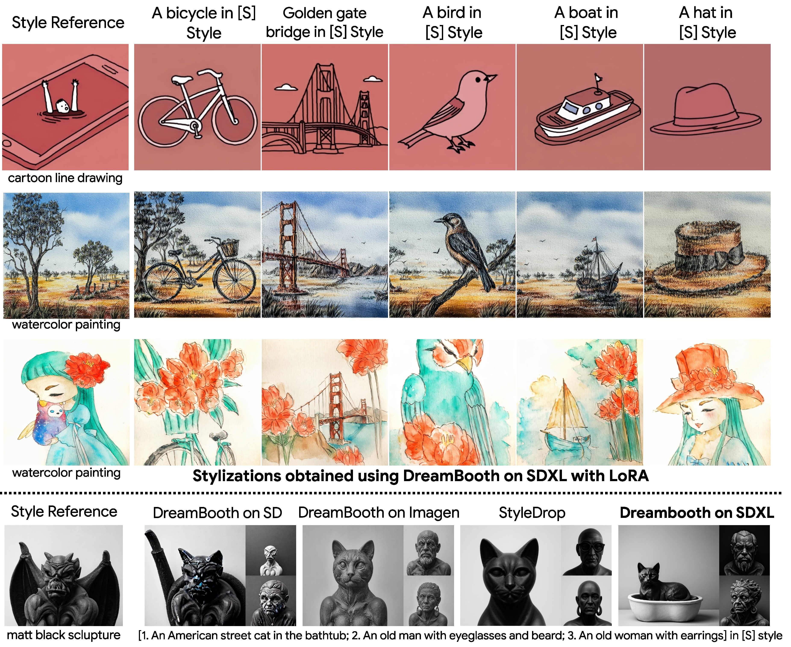
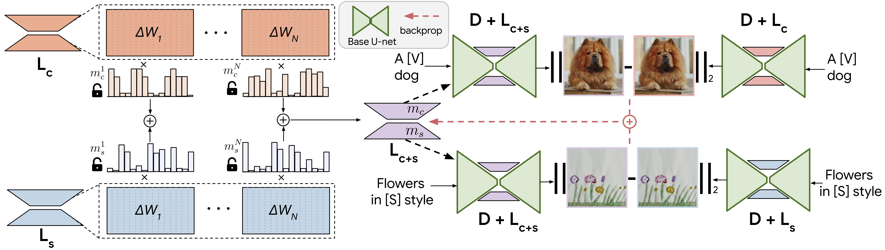

ZipLoRA: Any Subject in Any Style by Effectively Merging LoRAs

Methods for finetuning generative models for concept-driven personalization generally achieve strong results for subject-driven or style-driven generation. Recently, low-rank adaptations (LoRA) have been proposed as a parameter-efficient way of achieving concept-driven personalization. While recent work explores the combination of separate LoRAs to achieve joint generation of learned styles and subjects, existing techniques do not reliably address the problem, so that either subject fidelity or style fidelity are compromised. We propose ZipLoRA, a method to cheaply and effectively merge independently trained style and subject LoRAs in order to achieve generation of any user-provided subject in any user-provided style. Experiments on a wide range of subject and style combinations show that ZipLoRA can generate compelling results with meaningful improvements over baselines in subject and style fidelity while preserving the ability to recontextualize.
ZipLoRA can generate stylizations of a specific object by combining various style and content LoRAs. Our method succeeds at both preserving the identity of the reference subject and capturing the unique characteristics of the reference style. We also provide comparisons with Direct Merge, Joint Training, and StyleDrop.
A simple yet effective method to generate any subject in any style by cheaply merging independently trained LoRAs for subject and style.
Our approach is based on three important observations:
Observation 1: Unlike previous versions of Stable Diffusion, SDXL is able to learn styles using just a single exemplar image by following a DreamBooth protocol without any human feedback.
Observation 2: LoRA weight matrix for all layers are sparse. Most of the elements in the LoRA weight matrix have very small magnitude, and have little effect on generation quality and fidelity.
Observation 3: Columns of the weight matrices of two independently trained LoRAs may have varying levels of ``alignment'' between each other, as measured by cosine similarity, for example. We find that directly summing columns with high magnitude of cosine similarity degrades performance of the merged model.
Based on these observations, we hypothesize that a method that operates akin to a zipper, aiming to reduce the quantity of similar-direction sums while preserving the content and style generation properties of the original LoRAs will yield more robust, higher-quality merges. Much like a zipper seamlessly joins two sides of a fabric, our proposed optimization-based approach finds a disjoint set of merger coefficients for blending the two LoRAs. This ensures that the merged LoRA adeptly captures both subject and style.
The merged ZipLoRA model can recontextualize reference objects in diverse contexts and with semantic modifications while maintaining stylization quality.
While it is not required, we can still tune the strength of object and style for added controllability.
Our approach retains the original behavior of both the models and can accurately generate specific structural and stylistic elements of each constituent LoRA, while direct merge fails.
@article{shah2023ZipLoRA,
title={ZipLoRA: Any Subject in Any Style by Effectively Merging LoRAs},
author={Shah, Viraj and Ruiz, Nataniel and Cole, Forrester and Lu, Erika and Lazebnik, Svetlana and Li, Yuanzhen and Jampani, Varun},
booktitle={arXiv preprint arxiv:2311.13600},
year={2023}
}
Acknowledgements: We thank Prafull Sharma, Meera Hahn, Jason Baldridge and Dilip Krishnan for helpful discussions and suggestions. We also thank Kihyuk Sohn for helping with the generation of StyleDrop results.